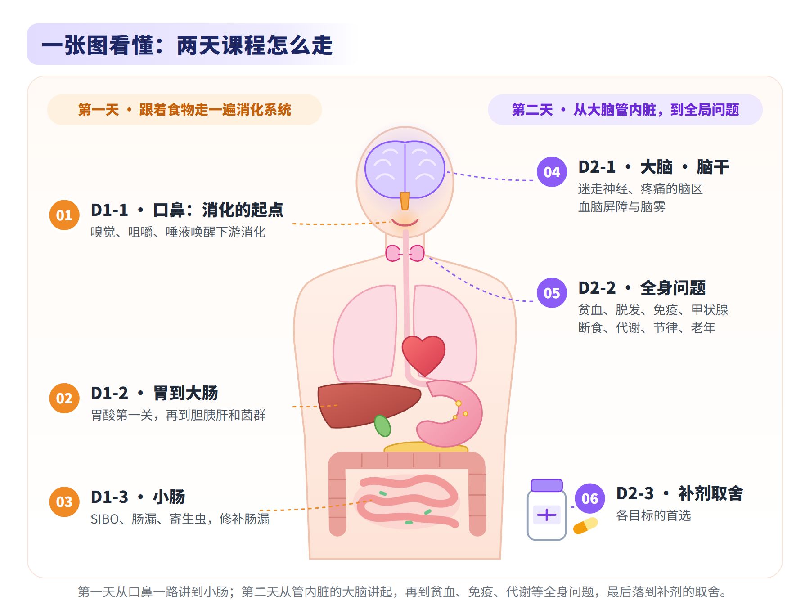
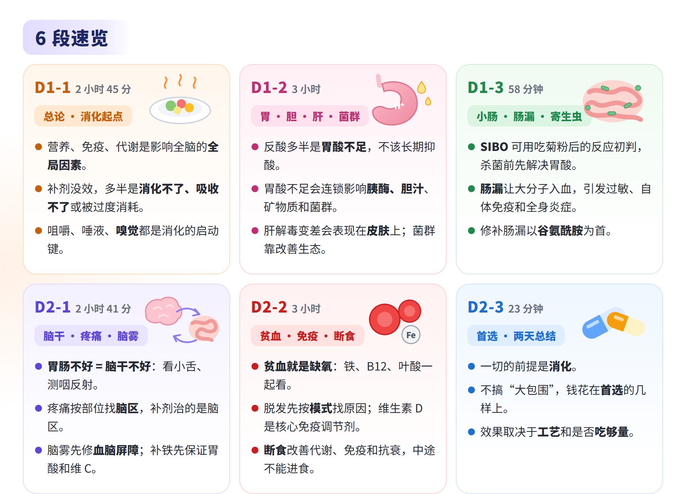
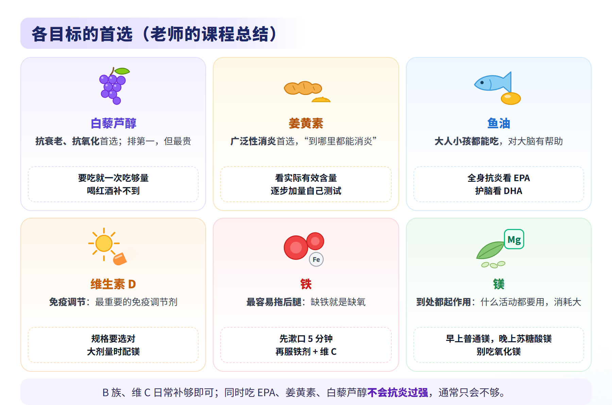
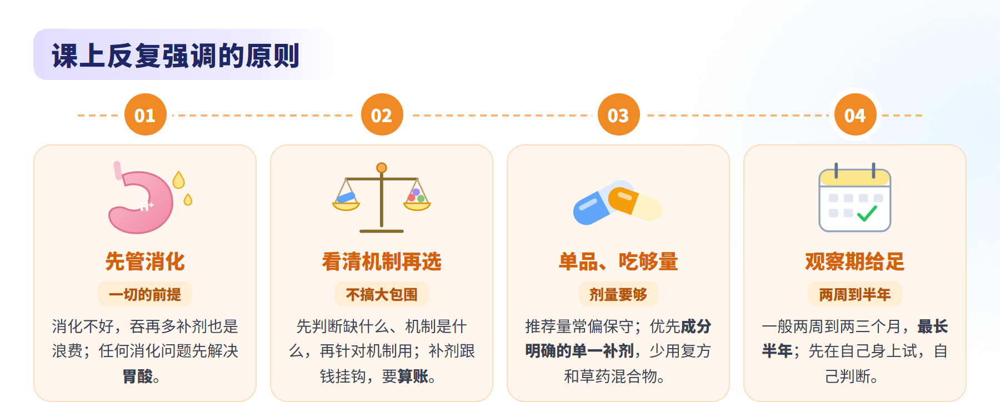
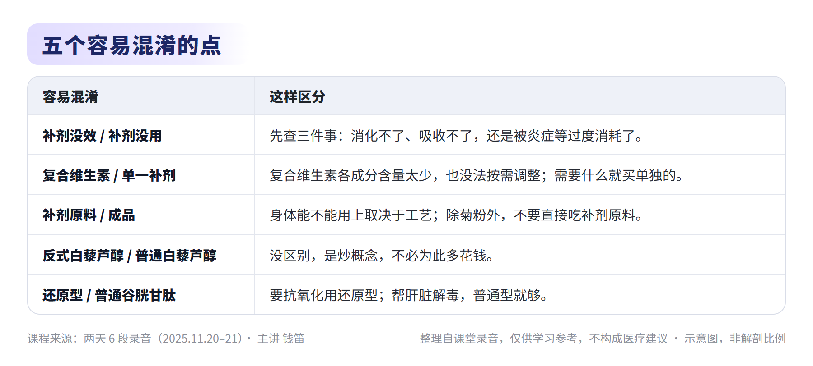

脑营养学 · 全课总览
主讲：钱笛 ｜ 日期：2025 年 11 月 20–21 日 ｜ 6 段录音，共约 12 小时 48 分
两天的主线：先消化，后取舍
本纪要整理自课堂录音，仅供学习参考，不构成医疗建议。





课程主线
两天课程的主线是“先消化，后取舍”：第一天跟着食物走一遍消化系统，第二天从管内脏的大脑讲起，再到贫血、免疫、代谢等全身问题，最后给出各目标的首选补剂。各段要点如下：
- 第一天：跟着食物走一遍消化系统
- D1-1 总论与消化的起点
- 全局因素：全脑普遍偏差时，先查营养、免疫、代谢这类全局因素，给足营养支持再做训练。
- 补剂为什么没效：多半是消化不了、吸收不了，或者被炎症等过度消耗了，所以整门课以“跟着食物走一遍消化系统”为主线。
- 消化的起点：咀嚼、唾液、嗅觉都是消化的“启动键”。
- 嗅觉：嗅觉退化很难自己察觉，可以用四种基础气味测试和训练。
- D1-2 胃酸、胆汁、肝与菌群
- 胃酸是第一关：反酸的人不应长期抑酸，而应提升胃酸；胃酸不足会连锁影响胰酶、胆汁、矿物质吸收和菌群。
- 反流的识别：很多反流没有反酸症状，要从咽喉、牙齿、舌苔、呼吸道问题间接发现。
- 肝与皮肤：肝解毒能力下降会表现在皮肤上；化验指标按病理标准制定，查不出早期的功能问题。
- 菌群：要靠改善生态，而不是靠补益生菌。
- D1-3 SIBO、肠漏与寄生虫
- SIBO：可以用“吃菊粉后的反应”初判；杀菌前先解决胃酸和消化酶不足。
- 肠漏：大分子直接入血，引发过敏、自体免疫和全身炎症。
- 修补肠漏：谷氨酰胺一定不能少，配合 EPA、姜黄素、维生素 D。
- 锌：每天不超过 40 毫克，长期补要防缺铜、缺铁。
- D1-1 总论与消化的起点
- 第二天：从大脑管内脏，到全身问题
- D2-1 迷走神经、疼痛、脑雾与铁
- 迷走神经：胃肠问题常常要从脑干找原因；用看小舌、测咽反射查体，用漱口和呼吸训练激活。
- 疼痛：疼痛是大脑整合后的输出，补剂治的是相关脑区，不是疼痛本身。
- 脑雾：与血脑屏障通透性增加、胶质细胞过度激活有关，以大剂量维生素 D3 为核心修复，感冒好了之后再吃。
- DHA 与他汀：DHA 是细胞膜和髓鞘的原料；正在服他汀且有斑块的人不能擅自停药。
- 铁：补铁前先保证胃酸和维生素 C 充足。
- D2-2 贫血、免疫、断食与代谢
- 贫血：铁、B12、叶酸要一起看；贫血的本质是缺氧，可以用平均红细胞体积判断主要缺哪一类。
- 脱发：先按模式找原因（贫血、皮质醇、甲状腺，雄激素，免疫），再对应方案。
- 免疫：自体免疫的关键诱因是食物蛋白、麸质、肠漏和分子模拟；维生素 D 是核心调节剂。
- 断食：改善代谢、免疫和抗衰的“简单粗暴”方案，关键是中途不进食；有胰岛素抵抗的人要逐步拉长间隔。
- 老年营养：上了年纪的人常备“四件套”——鱼油、辅酶 Q10、姜黄素、维生素 D。
- D2-3 补剂点评与两天总结
- 一切的前提是消化：不要“大包围”式补充，把钱花在关键的几样上。
- 各目标首选：见下文“各目标的首选”。
- 工艺与剂量：补剂效果取决于工艺和是否吃够量；除菊粉外，不要直接吃原料。
- D2-1 迷走神经、疼痛、脑雾与铁
6 段导航
| 录音 | 时长 | 主要内容 | 对应纪要 |
|---|---|---|---|
| 第一天 第1段 | 2:45:33 | 营养是影响全脑的全局因素；消化的起点；嗅觉与记忆 | D1-1 脑营养学智能纪要（第一天 第1段） |
| 第一天 第2段 | 3:00:00 | 胃酸与反流、胆汁与肝、皮肤、菌群 | D1-2 脑营养学智能纪要（第一天 第2段） |
| 第一天 第3段 | 0:58:30 | 小肠细菌过度生长、肠漏、寄生虫、修补肠漏方案 | D1-3 脑营养学智能纪要（第一天 第3段） |
| 第二天 第1段 | 2:40:44 | 迷走神经与脑干、疼痛、血脑屏障、DHA、铁 | D2-1 脑营养学智能纪要（第二天 第1段） |
| 第二天 第2段 | 2:59:54 | 贫血、脱发、免疫与甲状腺、断食、代谢、节律、老年营养 | D2-2 脑营养学智能纪要（第二天 第2段） |
| 第二天 第3段 | 0:23:22 | 补剂收尾、各目标首选、两天总结、答疑 | D2-3 脑营养学智能纪要（第二天 第3段） |
每份纪要的结构相同：图解卡片、总结（三级要点和配图）、章节速览（附录音时间点）、关键内容、金句时刻。
各目标的首选
| 目标 | 首选 | 要点 |
|---|---|---|
| 抗衰老、抗氧化 | 白藜芦醇 | 排第一位，但最贵；要么不吃，要吃就一次吃够量；喝红酒补不到 |
| 广泛性消炎 | 姜黄素 | “到哪里都能消炎”；关键看有效含量和工艺，要自己测试、逐步加量 |
| 小孩大人都能吃、对大脑有帮助 | 鱼油 | 要全身抗炎看 EPA 浓度，要护脑看 DHA 浓度 |
| 免疫调节 | 维生素 D | 最重要的免疫调节剂 |
| 全身最容易“拖后腿”的 | 铁 | 缺铁就是缺氧；补铁前先保证胃酸和维生素 C |
| 到处都起作用的金属 | 镁 | 什么活动都要用，消耗量大；别吃氧化镁，会拉肚子 |
| B 族、维生素 C | 日常补够即可 | 水溶性维生素容易获得，也便宜 |
同时吃 EPA、姜黄素、白藜芦醇不会抗炎过强，通常只会不够。
课上反复强调的原则
- 先管消化，再谈补剂。 消化不好，吞再多补剂也是浪费钱；遇到任何消化问题，第一步都先查、先解决胃酸。
- 不搞“大包围”，补剂要有取舍。 先判断到底缺什么、机制是什么，再针对机制选；补剂跟钱挂钩，必须算账。
- 补剂“没效”先查三件事。 是不是消化不了，是不是吸收不了，是不是被炎症等过度消耗了。
- 先给氧气和养分，再做训练。 全脑普遍偏差、“一练就好、睡一觉又差”、怎么练都没反应、一练症状就加重的人，先处理炎症、免疫和营养，不要逐个脑区硬练。
- 观察期要给足。 一般两周到两三个月，最长半年；不要因为短期没效就放弃。
- 先在自己身上试，自己判断。 补剂品牌好不好要亲自试用；他汀替代方案只限自己或家人尝试。
- 优先选成分明确的单一补剂。 少用成分复杂的草药混合物和“复方”抗氧化产品，宁可分开单独买；除菊粉外，不要直接吃补剂原料。
- 剂量要够。 膳食指南的推荐量偏保守，照搬往往难见效；白藜芦醇“要吃就一次吃够量”。
- 别指望补剂包治。 补剂不能预防神经退化性疾病或肿瘤，只能让它们晚来、轻一点；血糖问题靠控碳水解决，补剂只是辅助；持续接触致敏原，大脑调节做得再好也好不了。